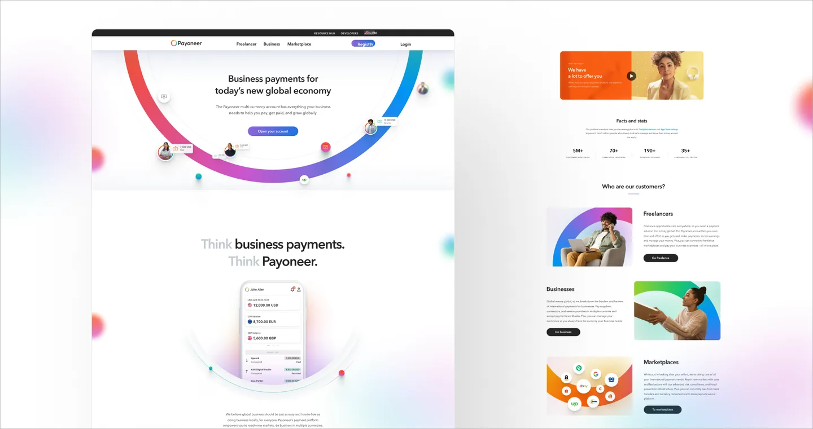
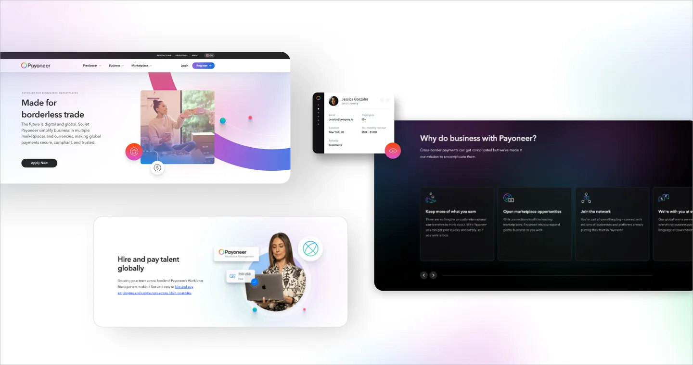
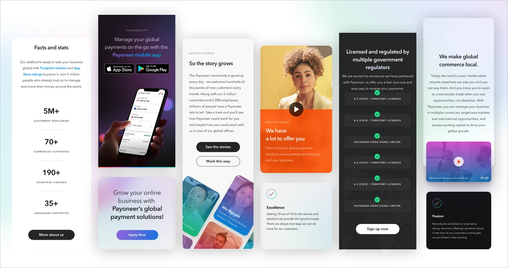
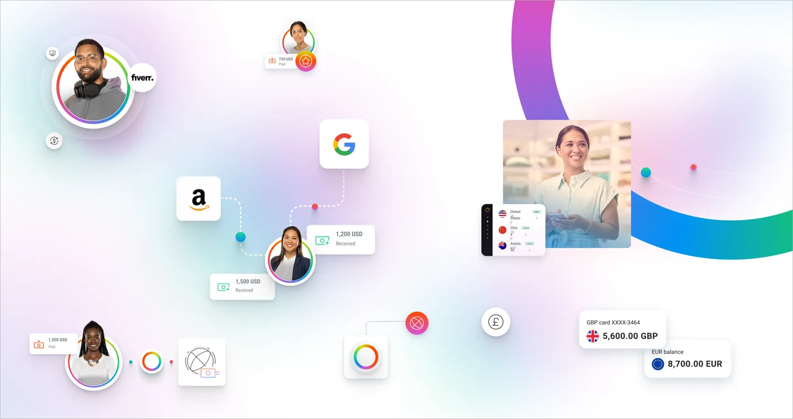

Payoneer website redesign
After the rebrand, the site no longer matched the company. I led the redesign that turned the new identity into a working web experience, and built it as a modular system so regional teams could adapt pages to their market without redrawing them.

What I inherited
A legacy interface that predated the rebrand, with page templates that had drifted apart market by market.
What I decided
To solve it as a system rather than a redesign. Shared components with defined flex points, so a market could change what it needed and nothing else.
What I led
The design direction, the component library, and the flows through to handoff.
Scope
Global site, multi-market rolloutOne system, many markets, no separate builds
Component-based, with defined flex pointsA market changes what it needs and nothing else
Direction, library and handoffLed by me across 2023
Built to be adaptedRegional teams ship without a designer in the loop


